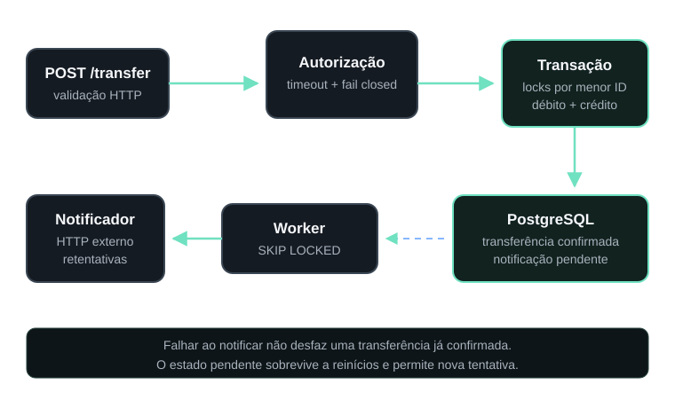

Projeto 01
Wallet API
Java 21 · Spring Boot · PostgreSQL · Docker
Challenge concluído ·
API REST de transferências entre carteiras, construída para manter as invariantes monetárias mesmo sob concorrência e falhas de serviços externos.
Decisões técnicas
- Transação única para débito, crédito e criação da notificação pendente.
- Locks pessimistas em ordem determinística para impedir gasto duplo e reduzir risco de deadlock.
- Retentativas de notificação persistentes com
FOR UPDATE SKIP LOCKED.
Evidência
- 49 testes: 28 de integração, 14 de clientes HTTP e 7 de domínio.
- PostgreSQL real em Testcontainers.
- Cenários de rollback, concorrência, timeout e indisponibilidade.
